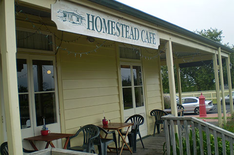
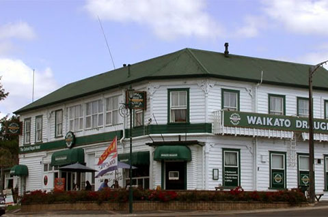
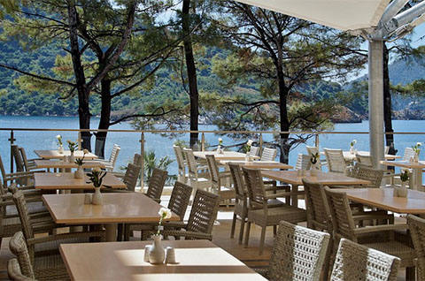
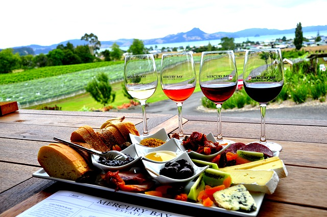
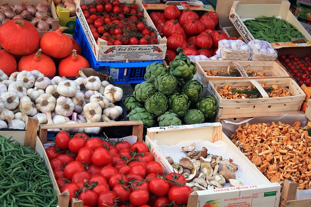

Where To Eat
The Waikato region is the place to make the most of some of New Zealand's best fresh local products and produce. Endeavour the farm fresh products, cheese, and wine. Enjoy dining at famous cafes, pubs and restaurants.
Autumn is the best season for produce in Waikato. Autumn produce have intense flavours and textures.

Cafes & Takeaways

Bars & Clubs

Restaurants

Cheese & Wine

Waikato Markets